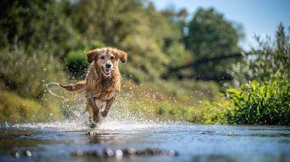
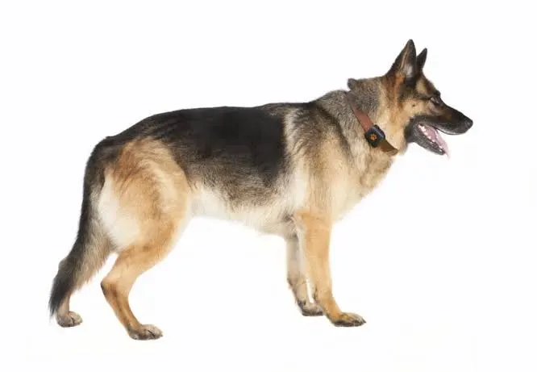
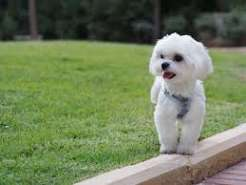

our services

mountain dew dog
Mountain Dew Dog" most likely refers to Puppy Monkey Baby, the bizarre, viral mascot created for a 2016 Mountain Dew Super Bowl commercial. The character combined the head of a Pug puppy, the body of a monkey, and the diapered legs of a dancing baby to promote Mountain Dew Kickstart.
learn more
germanshephard dog
The German Shepherd,[a] also known in Britain as an Alsatian, is a German breed of working dog of medium to large size. It is characterized by its intelligent and obedient nature. It was developed in Germany from 1899 by Max von Stephanitz, using various traditional German herding dogs, and gained international recognition after the end of the First World War. It was bred as a herding dog, for herding sheep, but has since been used in many other types of work, including disability assistance, search-and-rescue, police work, and warfare. It is commonly kept as a companion dog, and is among the most frequently registered breeds world-wide.
learn more
maltese
The Maltese is a world-famous toy dog breed renowned for its show-stopping, floor-length coat of pure white hair and a gentle, affectionate personality. Originating in the Mediterranean island nation of Malta over 2,000 years ago, these tiny companions typically weigh under four kilograms and feature striking black eyes and button noses. Despite their aristocratic appearance, they are lively, highly intelligent, and deeply devoted to their owners, making them excellent indoor pets. They are considered hypoallergenic because they have hair instead of fur and do not shed heavily, though their luxurious coats require daily brushing to prevent painful mats and tangles. Because they crave human companionship, they thrive best in households where they are not left alone for long periods.
learn more